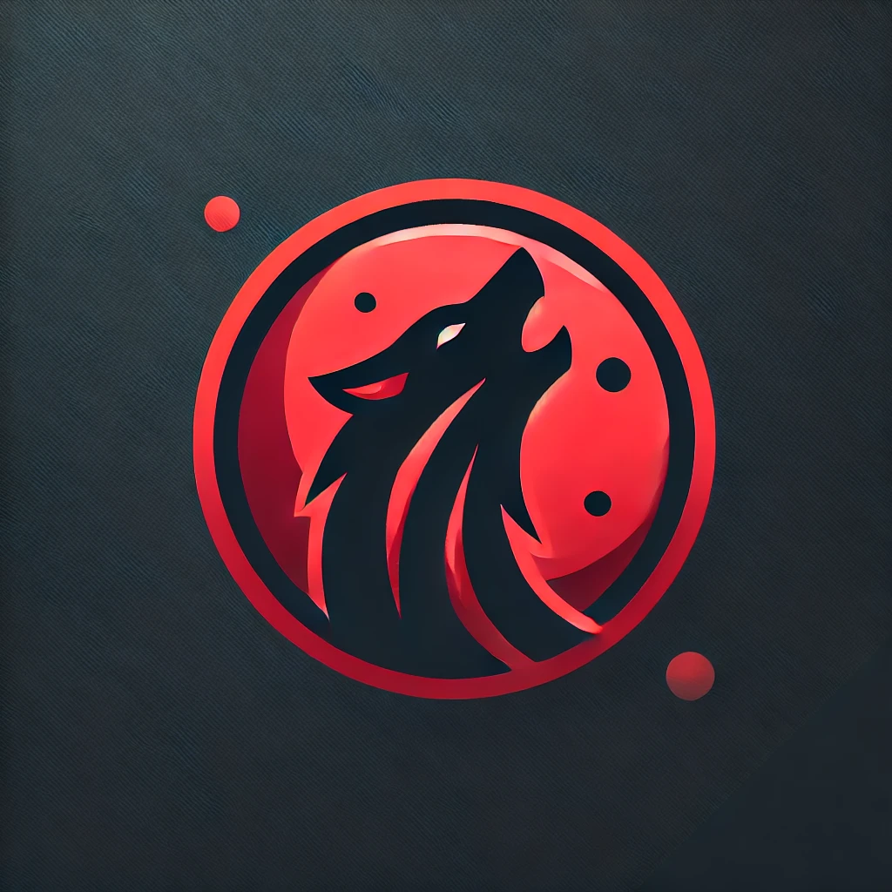

Informations du Projet
- Technologies : HTML, CSS, JavaScript, PHP
- Date : 2024
- Code source : Voir sur GitHub
- Lien du projet : Site Web
Ce site web permet aux joueurs du jeu de cartes Loup-Garou de créer et partager des compositions de rôles personnalisées. L’objectif est de proposer un espace interactif pour enrichir et diversifier les parties entre amis.

Le projet a été réalisé dans le cadre de ma formation BTS SIO. Il repose sur le framework Laravel. J’ai développé plusieurs modules clés :
Ce projet m’a permis d’apprendre à structurer une base de données relationnelle, utiliser Laravel pour des applications dynamiques, et créer une interface intuitive. C'était aussi une bonne introduction à la collaboration et au versioning avec Git.
N'hésitez pas à vous créer un compte 😁